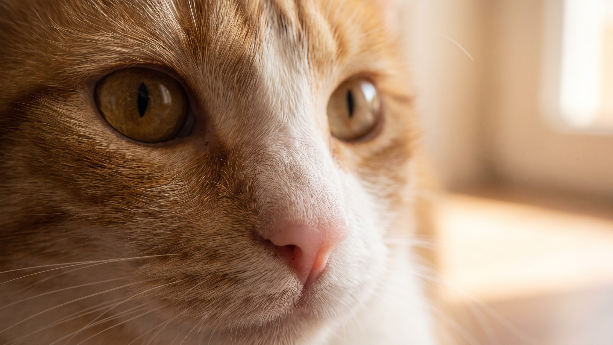

Пять утра. Вы спите. Потом что-то мягкое ложится на щёку: лапа кошки, пальцы сжимаются чуть сильнее, она смотрит прямо в лицо. Жест выглядит нежным, но у него есть конкретный смысл. Ниже: что именно кошка сообщает лапой и как на это отвечать, чтобы не закрепить то, что вам не нужно.
🐾 Хотите понять, что кошка говорит вам?
Опишите ситуацию или пришлите видео в AnimaLife — AI разберёт поведение вашего питомца и подскажет, что делать. Бесплатно, ответ за минуту.
Разобрать поведение → Разобрать в MAX →
У вас iPhone? AnimaLife есть в App Store
Подушечки лап кошки насыщены потовыми железами. Когда кошка кладёт лапу вам на лицо или руку, она оставляет запаховую метку: «это мой человек». Для неё это обыденная процедура маркировки, которая совмещается с другими мотивами.
Чтение жеста идёт не по одному лапному касанию, а по всему поведению рядом с ним.
Ласка выглядит так: кошка расслаблена, уши повёрнуты вперёд или нейтрально, хвост лежит спокойно, она не вокализирует. Лапа лежит мягко, без нажима. Кошка остаётся рядом и не уходит, получив касание.
Требование выглядит так: кошка напряжена, мяукает или издаёт короткие отрывистые звуки, постукивает лапой несколько раз, смотрит в сторону миски или двери. Если вы не реагируете, давление усиливается. Время: раннее утро, обычно за 30–60 минут до вашего обычного подъёма.
Важная деталь: кошка обучается вашей реакции. Если вы кормите её сразу после того, как она разбудила вас лапой, она запоминает схему и начинает применять её каждый день. Через 2–3 недели регулярного подкрепления жест закрепляется как рабочий инструмент.
Кошка, которая будит хозяина в 5 утра семь дней в неделю, доставляет дискомфорт. Несколько шагов, которые меняют привычку без конфликта:
Что не стоит делать: резко отталкивать лапу или кричать. Кошка не поймёт причины, но свяжет ваше лицо с неприятным. Напряжение там возникнет быстро, а уйдёт медленно. Достаточно спокойно встать, не кормить и уйти.
Если кошка всегда была спокойной, а потом начала настойчиво теребить вас, тыкать лапой в любое время дня, выглядеть тревожной или беспокойной, стоит обратить внимание. Резкое изменение в общительности или навязчивости иногда сигнализирует о физическом дискомфорте. В таком случае стоит описать изменение ветеринару: он поможет разобраться, что изменилось.
Сам по себе жест лапой на лицо это нормальная часть кошачьей коммуникации. Большинство кошек делают это, потому что это работает: вы реагируете. Вопрос только в том, в какой момент и с какой целью.
🐾 У вашей кошки так же?
Расскажите в AnimaLife, как ведёт себя ваш питомец, — приложение объяснит причину и даст пошаговый план. Бесплатно, без записи к специалисту.
Разобрать свой случай → Разобрать в MAX →
У вас iPhone? AnimaLife есть в App Store
🐾 Понравился разбор?
Подпишитесь на канал — каждый день разбираем по одному тревожному симптому у кошек и собак: что в пределах нормы, а когда пора к врачу. Подпишитесь, чтобы не пропустить разбор, который может спасти здоровье вашего питомца.
Материал носит информационный характер и не заменяет очную консультацию ветеринара.